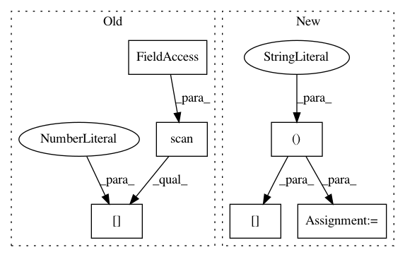

a9273fb766562261b2ccedb635c71363fb10f06c,GPflow/svgp.py,SVGP,build_likelihood,#SVGP#,46
Before Change
R = tf.triu(w)
S_q = tf.matmul(tf.transpose(R), R)
return -tf.reduce_sum(tf.log(tf.user_ops.get_diag(R))) + 0.5*tf.reduce_sum(S_q * K_inv)
KL += theano.scan(f, self.q_sqrt.swapaxes(0,2))[0].sum()
fmean, fvar = conditionals.gaussian_gp_predict(self.X, self.Z, self.kern, self.q_mu, self.q_sqrt)
After Change
KL += 0.5 * tf.reduce_sum(tf.expand_dims(tf.user_ops.get_diag(K_inv), 1) * tf.square(self.q_sqrt))
else:
for d in range(self.num_latent):
L = tf.user_ops.triangle(self.q_sqrt[d,:,:], "lower")
S = tf.matmul(L, tf.transpose(L))
KL += -tf.reduce_sum(tf.log(tf.user_ops.get_diag(L))) + 0.5*tf.reduce_sum(S * K_inv)
fmean, fvar = conditionals.gaussian_gp_predict(self.X, self.Z, self.kern, self.q_mu, self.q_sqrt)
In pattern: SUPERPATTERN
Frequency: 3
Non-data size: 6
Instances
Project Name: GPflow/GPflow
Commit Name: a9273fb766562261b2ccedb635c71363fb10f06c
Time: 2016-01-18
Author: james.hensman@gmail.com
File Name: GPflow/svgp.py
Class Name: SVGP
Method Name: build_likelihood
Project Name: GPflow/GPflow
Commit Name: 8a4fde49f1bd71bd6d57a31d29c76ba0636997bc
Time: 2016-01-18
Author: james.hensman@gmail.com
File Name: testing/test_conditionals.py
Class Name: DiagsTest
Method Name: setUp
Project Name: GPflow/GPflow
Commit Name: bbc4e3ee65ab504be761e3b5487ce4ccdd589da0
Time: 2016-01-18
Author: james.hensman@gmail.com
File Name: GPflow/svgp.py
Class Name: SVGP
Method Name: build_likelihood